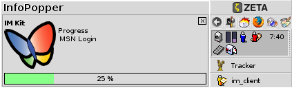
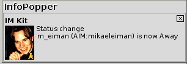
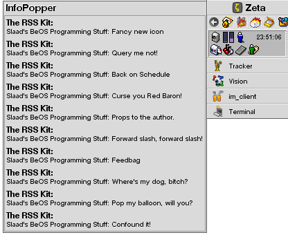
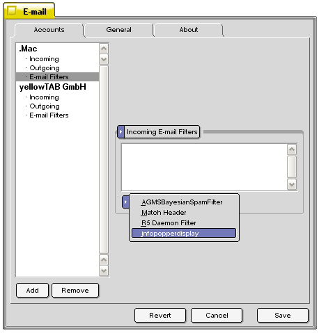
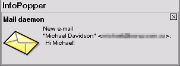
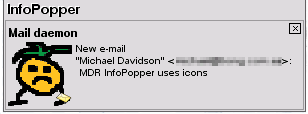
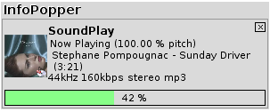
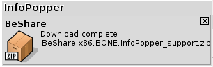
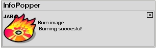
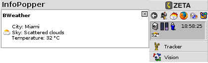

InfoPopper
Applications with InfoPopper support
There are already several applications supporting the InfoPopper. If your application is not listed, please contact us. We have also made a Developers section describing you in detail how you can add support for InfoPopper in your applications.
The Instant Messenger Kit
The IM kit can parse messages to InfoPopper that shows you when one of your buddies goes online/offline, changes status to available/away and with what protocol your buddy is connected with.

InfoPopper is also showing information when you are logging in with the
IM kit. It will show the login process for each protocol that you have
configured and then straight afterwards your online buddies with their
statuses.

For the AIM protocol InfoPopper will also show your friends' buddy
icons. On the screenshot a picture of our project leader changing his
online status to Away for the AOL Instant
Messenger (AIM) protocol.
Clicking on the InfoPopper when one of your buddies changes his/her status or send you a message, will open the relevant contact's chat window, so that you can start a chat with that person.
IconSetter utility -
It lets you set the icon for a person and a protocol.
slaad eg. build/utils/IconSetter /home/people/frankps "general"
/boot/home/Desktop/frank.jpg
The im_infopopper will look for an icon for the protocol a message comes from (eg. "aim"). If it can't find one it will look for the general one ("general"). If it still can't find one it uses the protocol icon.
The RSS Kit

The RSS kit has not been released yet, and is developed by Michael Davidson.
The Mail Daemon Replacement (MDR) Kit
InfoPopper is also capable of showing notifications of new e-mails received
with the Mail Daemon Replacement
(MDR) kit. Rumors are that also future versions of Beam
will be able to parse messages to the InfoPopper.
To make the InfoPopper notify you about new incoming e-mails, go to the Preferences
in MDR. For each e-mail account that you have configured, open E-mail
Filters settings, and then choose Incoming E-mail Filters in
the first pop-down menu and infopopperdisplay in the second pop-down
menu.

You will then see Send message to InfoPopper in the window over activated
filters. InfoPopper can of course run next to other filters.

After you have activated the infopopperdisplay filter in MDR, InfoPopper will
show you new incoming e-mails as the arrive on your system. InfoPopper will
display the sending e-mail address and the topic of the e-mail. Clicking on
a message shown in InfoPopper, will open that e-mail client that comes with
MDR.

When you are receiving new e-mails, the MDR plugin will look for the Person file who sent you an email and use their "general" icon. The plugin looks at the From email address. It queries for People files with an email matching that. If it finds it, it gets their "general" icon and displays that.
For now you'll need to use the IconSetter utility to set the "general" icon for a Person. If it cannot find a Person to match to the email, or the Person doesn't have a "general" icon, then the mail icon is used (like it was before). This works for any incoming mail, so you might set up a Person to represent the Dictionary.com word of the day and have their "general" icon be that of a Dictionary
Vision
Vision
is the default IRC client in Zeta. For a better user experience this
IRC client has a Notify List below the server and channel list on the
left side of the application's main window.
With InfoPopper you will be able to get better notifications on when
your friends are coming online and when they are going offline. Further
you will see messages containing your nickname.
SoundPlay
SoundPlay users can enjoy that InfoPopper shows them information about the current song being played. The tool shows you the album cover (48x48) - so called coverart, which in this case is the album hôtel costes 7 by Stephane Pompougnac. The track in this case is called Sunday Driver and Soundplay has played 42 % of the track).
Of more technical information, SoundPlay shows you what the
pitch has been set to and bitrate the track has been encoded in to.

The album covers are automatically downloaded from Amazon.com, and are
locally stored in the folder ~/config/settings/BeClan/InfoPopper/SoundPlay/AlbumCovers.
From time to time, you will find that Amazon hasn't got the
album or made available a picture of the album, you can then save a
picture of the album on the form {Artist}_{Album} .
BeShare
A demo implementation of InfoPopper support in BeShare has
been done by one of yellowTAB's developers, François Revol.
His version is only available on the Tycom BeShare server, and is
capable of parsing information when a download has been completed, when
your nickname get mentioned in the main chat window and when somebody
writes you a private message.

If you want to try this demo version of BeShare, please look for the following file on the BeShare server.
JABA
Jörn Weigend is the developer of JABA, and he got a kick when he saw InfoPopper in action, and added support for it more or less straight away. He later also developed the InfoPopper Settings interface.

JABA sends notifications to InfoPopper when the following important task have been completed or an error occur:
JABA is only available for ZETA.
BWeather
Andrea Anzani has added InfoPopper support to BWeather.